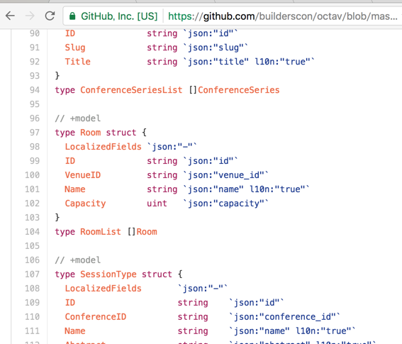
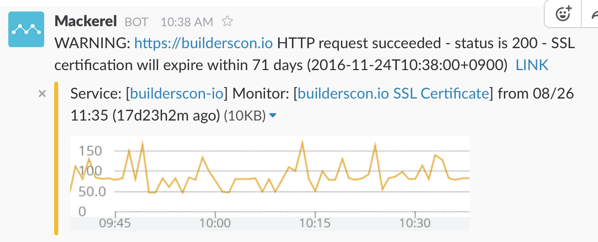

Building a Conference (Starting From an API Server)
Building a Conference (Starting From an API Server)
I was the main organizer for 6 out of the 10 YAPC::Asia Tokyo conference series in past years.
We were never sure how long we would keep holding the conference. Every year we burnt out, vowed never to do it again, only to do it over the next year (as of this writing, I will grudgingly admit that I am a serial-conference-organizer who just can’t quite organizing conferences)
This lead to an interesting situation: we never had the motivation nor the resources to build an infrastructure that we could build on successively. Instead every year we built our website and system: scrap and rebuild, basically. (To be precise, in the last few years we just copied over the files from last year, and built a new one on top of it)
Building For The Future
Now that I’m preparing for builderscon, the situation has changed. Our goal is to provide specifications, support, and infrastructure for a sustainable conference.
As engineers we all should know that one of ways to making a sustainable service is to automate as much grunt work as possible. So this time around, I spent about 6 months working on building an API server that can handle most of the manual work that went into preparing a conference.
For example, let’s say you want to have sponsors for your conference. When you have sponsors, you usually need to place their logo and link to their web site on your conference site. Usually sponsor logos are grouped in different “tiers” depending on the amount they contributed. Also, their names may need to be localized differently depending on the locale of the viewing client. You need to do this for all of your sponsors, which, in my experience, could be as large as around 100 sponsors. Without a system to support you, you need to manage this much data aside from the actual negotiations with the sponsors-to-be.
The previous paragraph alone should be enough to make you not want to run a conference (If I knew before hand, I might not have done it myself). But this is exactly the sort of thing that I wanted to solve before even hosting an actual conference.
Our API server can handle all of the above, and some more. Conferences, speakers, sessions, sponsors, “featured guests”, etc can all be handled in this API server. It also has builtin support for localization of arbitrary fields: all you need to do is to register fields using their language tags (e.g. you can pass a “description#ja” to register a Japanese description), and you can retrieve the localized version by passing a “lang=ja” query string. This solves headaches in many many many many ends that I cannot possibly cover in one article. Localization has always been a nightmare in my previous systems.

It’s still very rough on the edges, but I have written enough components to allow us to run a conference.
Technology
Technology wise, this server is built using Go, with as much automatic code generation based on JSON Schema (see my previous post on Go and JSON Schema, too).
The entire system runs on Google Container Engine (GKE). I have been using GKE and Kubernetes since the Kubernetes 1.0 days, and am glad to say that the recent advances have made things much easier for me to manage the operation and deployment.
The main builderscon site (https://builderscon.io) site is a thin wrapper around the API server, written in Python/Flask. To tell you the truth, this was my first Python application ever. For me, Jinja2+PyBabel was a life-saver, as it made localization much easier. The overall experience was much easier than I thought, but still it was an interesting experience for a Perl programmer like me.
HTTPs is entirely handled using Let’s Encrypt certificates. Previously I was performing interesting workarounds to get these certificates (post#1, post#2), but then I discovered kube-lego which just Does The Right Thing from within Kubernetes. And what solution can exist without proper monitoring? This is done using Mackerel, and we get a daily status update telling us when the certificate will expire.

Coming Up
I still want to implement additional features like ways to register questions for a session, and built-in feedback forms, but we will see. We will hold our first ever conference come December 3, 2016. We will see how this system holds up.